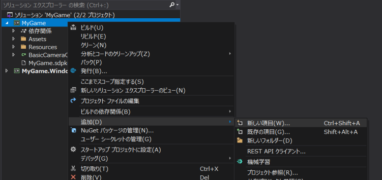
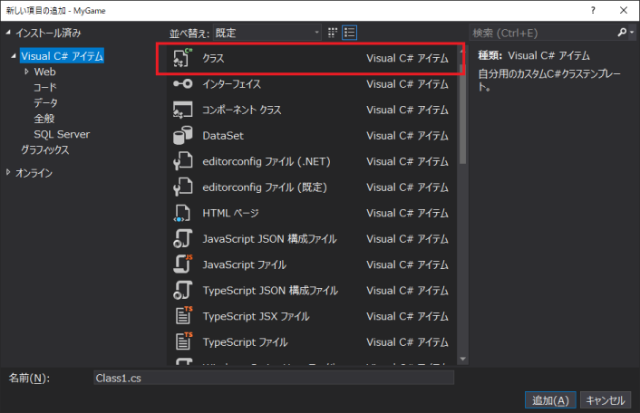
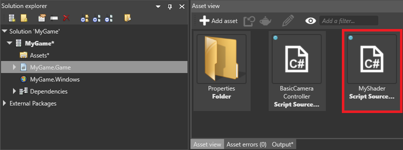
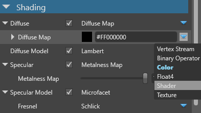
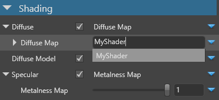

カスタムシェーダー
中級 プログラマー
Visual Studio で独自のシェーダーを書いて、マテリアル属性で使うことができます。例えば、オブジェクトのワールド位置に基づいてマテリアルにテクスチャーを追加するシェーダーを書いたり、ノイズを生成してマテリアルのプロパティをランダム化することに使ったりすることができます。
シェーダーはテキストファイルなので、他のコードファイルと同じようにコメントを追加したり、コードの行を有効にしたり無効にしたりと、編集することができます。そのため、メンテナンスや作業の繰り返しが容易です。
また、カスタムシェーダーを使用して、カスタムポストエフェクトを作成することもできます。詳しくは、カスタム色変換をご覧ください。
シェーダーを作成する
Stride Visual Studio 拡張機能がインストールされていることを確認してください。SDSL（Stride シェーディング言語）のシェーダーファイルを
.csファイルに変換するために必要です。Game Studio のツールバーの
 （Open in IDE）をクリックして、プロジェクトを Visual Studio で開きます。
（Open in IDE）をクリックして、プロジェクトを Visual Studio で開きます。Visual Studio の ソリューション エクスプローラーで、プロジェクト（例：MyGame.Game）を右クリックし、[追加] > [新しい項目] を選択します。

クラス を選択します。

名前を指定します。拡張子を
.csから.sdslに変更して（例：MyShader.sdsl）、[追加] をクリックします。
すると、Stride Visual Studio 拡張機能が、
.sdslファイルから.csファイルを自動生成します。ソリューション エクスプローラーでは、生成された.csファイルが.sdslファイルの子として追加されているのを確認することができます。.sdslファイルを開き、既存の内容を消去し、あなたのシェーダーを記述します。シェーダーは、HLSL をベースにした Stride Shading Language（SDSL）で記述します。詳しくはシェーディング言語をご覧ください。
例として、緑色（
RGBA 0;1;0;1）を生成するシェーダーを次に示します。namespace MyGame { shader MyShader : ComputeColor { override float4 Compute() { return float4(0, 1, 0, 1); } }; }Note
シェーダーの名前（例：上記の
MyShaderの部分）がファイル名と同じであることを確認してください。Note
Game Studio のプロパティグリッドからアクセスできるように、シェーダーは
ComputeColorを継承する必要があります。ComputeColorは常に float4 の値を返すので、float の値が必要なプロパティ（metalnessやgloss マップなど）は、ComputeColorが返す float4 値の第一成分（赤の成分）を使用します。ソリューションのすべてのファイルを保存します（[ファイル] > [すべて保存]）。
Game Studio で次のようなメッセージが表示されるので、[Reload] をクリックして、ファイルを再読み込みします。

アセットビューに、スクリプトと同じディレクトリ（例：MyGame.Game）にあるシェーダーが表示されます。

Note
下のスクリーンショットのように、Game Studio がシェーダーを誤ってスクリプトと認識してしまう場合があります。

この場合、Game Studio を再起動してください（[File] > [Reload project]).
カスタムシェーダーを使う
カスタムシェーダーは、任意のマテリアル属性で使用することができます。
アセットビューで、シェーダーを適用したいマテリアルを選択します。
プロパティグリッドで、シェーダーを適用したいプロパティの横にある
 （Change）をクリックし、Shader を選択します。
（Change）をクリックし、Shader を選択します。
フィールド欄に、カスタムシェーダーの名前（MyShader など）を入力します。

そのプロパティは、指定したシェーダーを使用します。
Tip
Visual Studioで .sdsl ファイルに変更を加えて保存すると、Game Studio は自動的にプロジェクトを変更して更新します。これが起こらない場合は、Game Studio を再起動してください（[File] > [Reload project]）。
Note
プロジェクトのアセットからシェーダーを削除した場合、エラーを防ぐために、シェーダーを使用するマテリアルのプロパティからもシェーダーを削除してください。
引数とパラメーター
テンプレート引数
テンプレート引数（ジェネリック）は、実行時には変更されません。ただし、異なるマテリアルは、異なるシェーダーのインスタンスを異なる値で使用することができます。
シェーダーがコンパイルされる際に、Stride は、テンプレートの引数に対応してプロパティグリッドで設定されている値を使用します。
例えば、次のコードでは、テンプレート引数 Frequency を定義し、使用しています。
shader ComputeColorWave<float Frequency> : ComputeColor, Texturing
{
override float4 Compute()
{
return sin((Global.Time) * 2 * 3.14 * Frequency);
}
};
パラメーター
パラメーターは、実行時の変更が可能です。
例えば，次のコードでは，動的パラメータ Frequency を定義し、使用しています。
shader ComputeColorWave: ComputeColor, Texturing
{
cbuffer PerMaterial
{
stage float Frequency = 1.0f;
}
override float4 Compute()
{
return sin(( Global.Time ) * 2 * 3.14 * Frequency);
}
};
実行時に値を変更するために、マテリアルのパラメーターコレクションにアクセスしてそこに設定します。例えば、Frequency を変更する場合は、次のようにします。
myMaterial.Passes[myPassIndex].Parameters.Set(ComputeColorWaveKeys.Frequency, MyFrequency);
Note
ComputeColorWaveKeys.Frequency は、Stride Visual Studio 拡張機能によってシェーダーファイルから生成されます。
コンポジション
このコンポジションでは、Game Studio のプロパティグリッドから Frequency を設定することができます。
shader ComputeColorWave : ComputeColor, Texturing
{
compose ComputeColor Frequency;
override float4 Compute()
{
return sin(( Global.Time ) * 2 * 3.14 * Frequency.Compute().r);
}
};
これで、マテリアルのプロパティに値を設定できます。
カスタムシェーダーの例
カスタムシェーダーの例として、Stride に同梱されている custom material shader サンプルプロジェクトを参照してみてください。
このプロジェクトでは、ComputeColorWaveNormal シェーダがディスプレイスメントマップとサーフェスのマテリアルプロパティに使用されています。